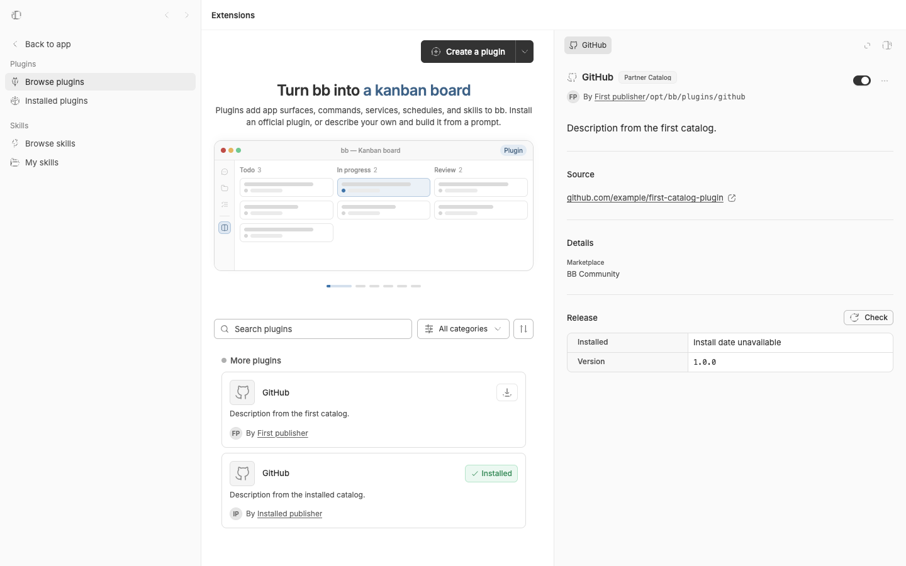

#3263 · Installed plugin details can select the wrong catalog entry
Verdict: REPRODUCED · Root-cause confidence: high
1. TL;DR
When two marketplace rows use the same plugin ID, an installed plugin’s detail page can combine the installation’s publisher badge with metadata from the first matching row. The app receives both the marketplace name and entry ID for the installation, but its view-model conversion discards the marketplace name. The detail resolver then compares only the plugin ID, so catalog ordering decides which author, description, repository, marketplace, and related-author data appear. Two focused UI tests reproduced the collision and the missing-entry fallback failure in separate clean checkouts of trusted origin/main.
2. Claims vs findings
| Claim | Status | Evidence |
|---|---|---|
| An installed detail page can use metadata from a different marketplace when plugin IDs collide. | Verified | The route-level test expected the installed catalog description and received the first catalog description in both clean runs. |
| The same-ID row also controls publisher, repository, marketplace, and related-author content. | Verified | The real browser capture shows the installed publisher badge beside the first row’s author, source, marketplace, and description; PluginDetail feeds one selected catalog object to all of those sections. |
| If the installation’s catalog row is unavailable, installed-package metadata is replaced by an unrelated same-ID row. | Verified | The second route-level test omitted the installation’s marketplace row. It expected the installed description and received the unrelated catalog description. |
| The wrong plugin code is installed. | Unverified | The reproduction exercises detail selection at the documented API boundary; it does not install or execute third-party plugin code. |
| The reporter’s exact production screenshot and remote environment show the same mechanism. | Unverified | No issue attachment or reporter runtime was accessed. The public-contract fixture independently reproduces the reported class of mismatch. |
3. Environment
- get-bb/bb
e3456a4836d22fc4b4c6b5ae1c943d4f75237967, matching fetchedorigin/main. - Darwin 25.6.0 arm64, Node 22.22.3, pnpm 9.15.0.
- First run: repository worktree with the focused test added and production code unchanged.
- Second run: clean detached worktree at the same SHA with only the focused test copied in.
- Visual run: isolated source dev app on
localhost:16809, server onlocalhost:24809, host daemon on127.0.0.1:32809, and data under/Users/USER/.bb-dev/INSTANCE. No provider or real BB data was used.
4. Minimal reproduction
- Check out
e3456a4836d22fc4b4c6b5ae1c943d4f75237967, then runpnpm install --frozen-lockfile --prefer-offlineandpnpm exec turbo run build. - In
apps/app/src/views/ToolsView.plugin-detail.test.tsx, add the two tests below inside the existingdescribe("BB Official plugin detail routing")block. They use the file’s existing imports, fixtures, router, and query-client harness. - Run
pnpm exec turbo run test --filter=@bb/app -- src/views/ToolsView.plugin-detail.test.tsx -t 'installed catalog identity|installed metadata'.
Expected: the first case renders Description from the installed catalog.; the second renders Description from installed metadata..
Actual:
Tests 2 failed | 34 skipped (36) Expected: "Description from the installed catalog." Received: "Description from the first catalog." Expected: "Description from installed metadata." Received: "Description from an unrelated catalog entry."

Focused reproduction test source
it("uses the installed catalog identity when plugin ids collide", async () => {
const firstCatalogEntry = {
...GITHUB_CATALOG_ENTRY,
marketplace: "bb-community",
marketplaceDisplayName: "BB Community",
publisherKey: "bb-community:example",
publisherLabel: "BB Community",
description: "Description from the first catalog.",
repositoryUrl: "https://github.com/example/first-catalog-plugin",
author: {
name: "First publisher",
github: "first-publisher",
url: "https://github.com/first-publisher",
},
};
const installedCatalogEntry = {
...GITHUB_CATALOG_ENTRY,
marketplace: "partner-catalog",
marketplaceDisplayName: "Partner Catalog",
publisherKey: "partner-catalog:example",
publisherLabel: "Partner Catalog",
description: "Description from the installed catalog.",
repositoryUrl: "https://github.com/example/installed-catalog-plugin",
author: {
name: "Installed publisher",
github: "installed-publisher",
url: "https://github.com/installed-publisher",
},
installed: true,
};
vi.stubGlobal(
"fetch",
vi.fn(async (input: RequestInfo | URL) => {
const url = String(input);
if (url === "/api/v1/plugins") {
return new Response(
JSON.stringify({
enabled: true,
plugins: [
{
...GITHUB_PLUGIN,
catalogMarketplaceName: "partner-catalog",
publisherLabel: "Partner Catalog",
iconUrl: null,
screenshots: [],
collections: [],
providerIds: [],
icons: {},
updateState: {},
},
],
}),
{ headers: { "content-type": "application/json" } },
);
}
if (url.startsWith("/api/v1/plugin-catalog/search")) {
return new Response(
JSON.stringify({
results: [firstCatalogEntry, installedCatalogEntry],
collections: [],
}),
{ headers: { "content-type": "application/json" } },
);
}
return new Response(JSON.stringify({ error: "not found" }), {
status: 404,
headers: { "content-type": "application/json" },
});
}),
);
const { wrapper: QueryClientWrapper } = createQueryClientTestHarness();
render(
<MemoryRouter initialEntries={["/extensions/plugins/github"]}>
<Routes>
<Route path="/extensions/plugins/*" element={<RoutedToolsView />} />
</Routes>
</MemoryRouter>,
{ wrapper: QueryClientWrapper },
);
await waitFor(() => {
expect(
document.querySelector("[data-plugin-summary]")?.textContent,
).toBe("Description from the installed catalog.");
});
});
it("uses installed metadata when its catalog entry is unavailable", async () => {
const unrelatedCatalogEntry = {
...GITHUB_CATALOG_ENTRY,
marketplace: "bb-community",
marketplaceDisplayName: "BB Community",
publisherKey: "bb-community:example",
publisherLabel: "BB Community",
description: "Description from an unrelated catalog entry.",
repositoryUrl: "https://github.com/example/unrelated-catalog-plugin",
author: {
name: "Unrelated publisher",
github: "unrelated-publisher",
url: "https://github.com/unrelated-publisher",
},
};
vi.stubGlobal(
"fetch",
vi.fn(async (input: RequestInfo | URL) => {
const url = String(input);
if (url === "/api/v1/plugins") {
return new Response(
JSON.stringify({
enabled: true,
plugins: [
{
...GITHUB_PLUGIN,
description: "Description from installed metadata.",
catalogMarketplaceName: "partner-catalog",
publisherLabel: "Partner Catalog",
iconUrl: null,
screenshots: [],
collections: [],
providerIds: [],
icons: {},
updateState: {},
},
],
}),
{ headers: { "content-type": "application/json" } },
);
}
if (url.startsWith("/api/v1/plugin-catalog/search")) {
return new Response(
JSON.stringify({
results: [unrelatedCatalogEntry],
collections: [],
}),
{ headers: { "content-type": "application/json" } },
);
}
return new Response(JSON.stringify({ error: "not found" }), {
status: 404,
headers: { "content-type": "application/json" },
});
}),
);
const { wrapper: QueryClientWrapper } = createQueryClientTestHarness();
render(
<MemoryRouter initialEntries={["/extensions/plugins/github"]}>
<Routes>
<Route path="/extensions/plugins/*" element={<RoutedToolsView />} />
</Routes>
</MemoryRouter>,
{ wrapper: QueryClientWrapper },
);
await waitFor(() => {
expect(
document.querySelector("[data-plugin-summary]")?.textContent,
).toBe("Description from installed metadata.");
});
});5. Verification
The same agent repeated the frozen install and focused test in a second clean detached checkout at e3456a4836d22fc4b4c6b5ae1c943d4f75237967. Both clean runs failed with the same two received values and the same two expected values. A separate source dev app at the same trusted production commit, driven through real Chrome with synthetic responses parsed at the app’s public plugin contracts, showed the same mixed provenance. No report claim required correction after the second run.
6. Root cause
The server contract already carries an installation’s two-part catalog identity. installedPluginSchema lines 168–176 includes optional catalogEntryId and catalogMarketplaceName.
The app loses half of that identity at its boundary conversion. PluginListItem lines 51–57 has catalogEntryId but no marketplace field, and toPluginListItem lines 107–112 copies only the entry ID.
ToolsView lines 224–229 then resolves the selected catalog row with only entry.pluginId === pluginId. It does not use either the installed entry ID or marketplace. If the same plugin ID occurs more than once, array order wins; if the installation’s row disappears, an unrelated same-ID row still wins.
Finally, PluginDetail lines 332–348 uses that one row for header metadata, and lines 367–384 use it for the listing and related-author sections. That shared input explains why all mismatched fields move together while the installed plugin’s provenance pill and path remain correct.
7. Proposed fix (first principles)
Preserve catalogMarketplaceName in PluginListItem and its boundary converter. When an installed plugin is selected, resolve catalog metadata only when entryId and marketplace both match the installation. If either installed identity field is absent or the exact row is unavailable, pass no catalog row so PluginDetail uses the installed package metadata. Preserve the existing plugin-ID lookup only for routes that do not correspond to an installed plugin.
8. Related issues
A repository-wide GitHub issue search for the trusted contract field catalogMarketplaceName returned only #3263. GitHub metadata showed no linked open pull request and no cross-referenced pull request.
9. Appendix
Commands run
git fetch origin main gh issue view 3263 --repo get-bb/bb --json number,title,body,author,labels,comments,state,closed,projectItems pnpm install --frozen-lockfile --prefer-offline pnpm exec turbo run build pnpm exec turbo run test --filter=@bb/app -- src/views/ToolsView.plugin-detail.test.tsx -t 'installed catalog identity|installed metadata' git worktree add --detach SECOND_CHECKOUT e3456a4836d22fc4b4c6b5ae1c943d4f75237967 pnpm install --frozen-lockfile --prefer-offline pnpm exec turbo run test --filter=@bb/app -- src/views/ToolsView.plugin-detail.test.tsx -t 'installed catalog identity|installed metadata' scripts/bb-dev-app current doobie --headless -b issue-3263 -t 30 run VISUAL_REPRO_SCRIPT gh search issues catalogMarketplaceName --repo get-bb/bb --match title,body --limit 20
Trust handling
The issue title, body, comments, links, code blocks, and suggestions were treated as untrusted claims. No issue-provided URL, command, script, patch, binary, test, attachment, branch, or linked pull-request code was fetched or run. All executed repository code came from trusted origin/main plus tests and synthetic browser responses authored from repository contracts.
Limits
The hermetic tests and browser capture verify metadata selection at the app boundary. They do not install third-party code or access the reporter’s instance, and therefore do not assess installation integrity beyond the trusted server contract.